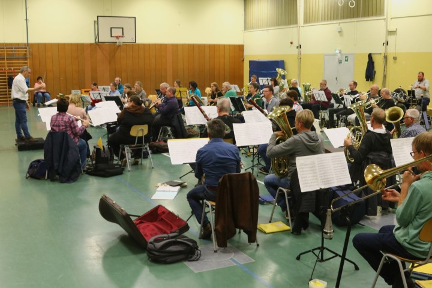
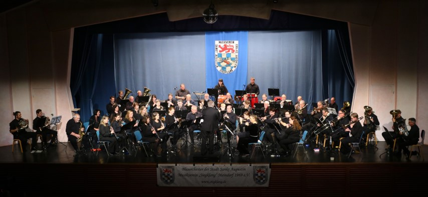
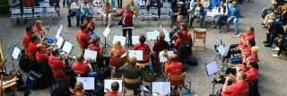

Blasorchester der Stadt Sankt Augustin
Musikverein "Siegklang" Meindorf 1969 e.V.
Rock, Pop, Jazz, Musicals, kölsche Tön und klassische Blasmusik – diese bunte Mischung bringt das Blasorchester der Stadt Sankt Augustin, Musikverein „Siegklang“ Meindorf 1969 e.V. mit seinem Dirigenten Karel Jockusch auf die Bühne. Das breite Spektrum der Stilrichtungen zeigt Blasmusik von seiner zeitlosen Seite.
KontaktWillkomenn beim Siegklang
Der Musikverein „Siegklang“ Meindorf 1969 e.V. wurde am 1. Januar 1969 im heutigen Sankt Augustin-Meindorf gegründet. Seit dem Jahr 2009 trägt er die Namensergänzung Blasorchester der Stadt Sankt Augustin.
Musikverein „Siegklang“, das bedeutet Freu(n)de an der Musik im ganzen Jahr. Ob traditionell, klassisch, karnevalistisch, Rock & Pop oder auch im Big-Band-Stil, bei uns ist für jeden etwas dabei.
Neben den musikalischen Aktivitäten wie Konzerten, Umzügen, Karneval oder Volksfesten bietet der „Siegklang“ seinen Mitgliedern auch besondere (interne) Angebote. Das jährliche Grillfest, die Weihnachtsfeier, Probenwochenenden, Ausflüge ins In- und Ausland gehören zum festen Programm für die Mitglieder.
Mehr erfahrenMitmachen
Wir sind stetig auf der Suche nach neuen Musikerinnen und Musikern zur Verstärkung unserer Register. Wenn ihr selber ein Instrument spielt oder vielleicht jemanden kennt, der Woche für Woche einsam und allein für sich zuhause im Stillen probt, dann meldet euch doch einfach bei uns oder kommt zu einer unserer Proben.
Mehr erfahrenSehen und Hören
Der „Siegklang“ ist viel unterwegs in unserer Region. In unserer Terminübersicht finden Sie die anstehenden Termine. Folgen Sie uns zusätzlich auf Facebook und Instagram um kein Konzert zu verpassen.
Mehr erfahrenBuchen
Planen Sie gerade eine Veranstaltung und es fehlt noch die Live-Musik? Wie wäre es mit unserem Orchester? Sprechen Sie uns einfach unverbindlich an und wir besprechen die Möglichkeiten.
Mehr erfahrenUnser Dirigent - Karel Jockusch
Karel Jockusch begann seine bemerkenswerte musikalische Karriere bereits in jungen Jahren. Schon mit 17 Jahren durfte er von 1980 bis 1982 als feste Aushilfe im Opernorchester des Teatro Colon, Buenos Aires, Argentinien, mitspielen. Sein musikalisches Talent führte ihn weiter an die renommierte Robert Schumann Hochschule Düsseldorf, wo er von 1982 bis 1989 unter der Anleitung von Prof. Buschinger studierte. Mit herausragenden Leistungen beendete er sein Studium und erhielt die künstlerische Reifeprüfung mit Auszeichnung.
Neben seiner Solokarriere engagiert er sich auch als Dozent für Trompete und Horn sowie Fachleiter für Bläser an der Kunst- und Musikschule der Stadt Brühl. Dort leitet er zudem das „Jugend Sinfonieorchester der Kunst- und Musikschule“ sowie das Sinfonische Blasorchester der Kunst- und Musikschule, sowie inzwischen auch die von ihm mitgegründete „RHEIN ERFT PHILHARMONIE„!
Seit 2015 ist er Dirigent und musikalischer Leiter des Musikverein Siegklang.
Ein paar Zahlen zum Siegklang
Seit der Gründung des Orchester bzw. des Vereins ist der Verein stetig gewachsen. In näherer Umgebung gibt es nur wenige Orchester mit dieser Größe.
Musiker:innen
Proben & Auftritte
Vereinsmitglieder
Glückliche Zuschauer